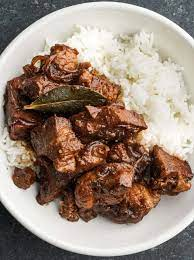

How to cook Adobo
Ingredients
- 2 pounds pork shoulder cut into chunks
- ¼ cup cane vinegar or white vinegar
- ⅓ cup low sodium soy sauce
- 6 cloves garlic chopped
- 1 bay leaf
- 2 teaspoons black peppercorns
- 2 teaspoons sugar
- 1 tablespoon canola oil
- 2 cups water
Cook
- In a medium dutch oven or pot over medium high heat, add the oil and sear the pork until browned on all sides.
- Add the vinegar, soy sauce, garlic, bay leaf, peppercorns (tied in cheese cloth if desired), sugar, and water, and bring to a boil. Reduce the heat to medium low, cover, and simmer for 1 hour.
- Remove the cover and continue simmering for another 30 minutes to reduce the sauce.
- Serve over rice!

Find other recipes with Knorr